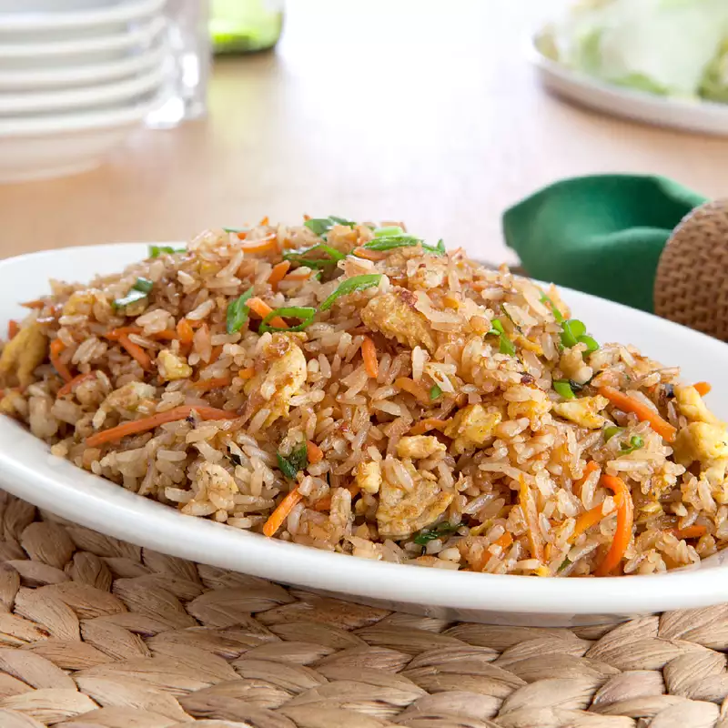

Chicken Fried Rice

Description
This is a delightful dish I used to eat a lot during my waitress era!
This became one of my favorite foods to eat at my old job. I even learned
how to make this dish myself because I loved it so much. It is simple and delish!!
Ingredients
- 2 tbsp butter
- 3 cups cooked white rice (cold)
- 1 cup frozen sweet peas
- 1/2 cup carrots
- 2 eggs (beaten)
- 1 small onion, chopped
- 2 green onions (chopped)
- 1 tsp garlic powder
- 2 tbsp soy sauce
- 1 pound boneless chicken breast
- Dash of sea salt and black pepper
Steps
- Melt butter in a large non stick skillet over medium heat.
- Add onions, peas, and carrots and cook until tender.
- Push the vegetables to one side and pour the beaten eggs on the other side. Scramble the eggs until set.
- Mix the eggs and vegetables together.
- Add garlic powder and soy sauce and stir to mix.
- Add the cooked rice and chicken. Mix well.
- You can top it off with green onions and a dash of salt and pepper.
- Enjoy!!!